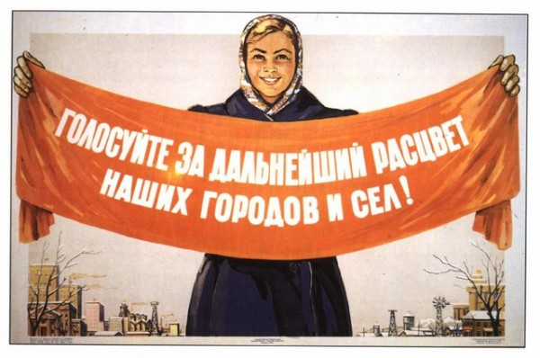

Мне далеко за 25, и иллюзий по поводу выборов я, к сожалению, давно не питаю. Юношеский максимализм выветрился вместе за запахом водки «Смирнофф», «Петрофф» и «Демидофф», а старческий минимализм тоже пока только маячит вдалеке.
На последние выборы я ходил уже не ради проявления гражданской позиции, а только для удовлетворения своего любопытства. Хотелось своими глазами увидеть до чего дошли технологии фальсификации, но… не пришлось.

В преддверии будущих президентских выборов, я, по-прежнему, думаю, что ничего не изменится. Но, возможно, опять схожу. Просто, чтобы раскрасить воскресный вечер. Рассматривать кандидатов, изображая политического аналитика, на мой взгляд, не стоит. Предвыборные программы в России всегда остаются предвыборными программами, поэтому при выборе буду опираться только лишь на эмоции, которые вызывает тот или иной кандидат.
К фигуре Зюганова я отношусь, в целом, скорее положительно. Мужик (нелепое слово в отношении него, ну да ладно) в основном придерживается однажды выбранной линии. Недостатков, на мой взгляд, у Зюганова, на данных выборах, в следующем. Зюганов кандидат в Президенты уже далеко не первый раз. Момент его славы прошёл в 1996 году, когда Ельцина выбрали только лишь на противопоставлении лидеру КПРФ. С тех пор Зюганов — это приличный Жириновский. Говорит уверенно, держится на публике хорошо, власти противостоит, но ненастойчиво. Не могу быть уверенным есть ли будущее у КПРФ, как движения, в России, но время Зюганова уже ушло.
Ушло время и ещё одного кандидата. Жириновский в большой политике столько же сколько и лидер КПРФ, но, если в начале его партия была по-настоящему оппозиционной, то потом Владимир Вольфович скатился сначала в эпатаж, а последние месяцы и вовсе в какой-то трэш. Электорат его, думаю, стоит искать именно среди тождественных социальных групп. Эпатаж и трэш.
Третий кандидат, Миронов, на мой взгляд, должен был бороться за одну и ту же аудиторию, что и Стас Михайлов. Но Михайлов в президентской гонке принять участие отказался (я уверен хотел, но отказался), поэтому в телевизоре есть Миронов. Славянская внешность на фоне ледокола.
Кандидата Прохорова, рассматривать всерьёз я не могу. Вероятно он грамотный менеджер, но в качестве политика Михаил не зарекомендовал себя никак. Скорее даже наоборот. Несмотря на то, что, по независящим от него причинам, смотрит на людей свысока, говорить Прохоров с людьми не умеет. Отчаянно жестикулирует, что подтверждает неуверенность в себе, качает головой. Если бы я не знал, что он один из самых богатых людей России, я бы решил, что это преподаватель физкультуры на приёме у губернатора, а не будущий президент на встрече с избирателями. Неуверенный в своих силах человек не может быть лидером государства. Но голосовать, если всё-таки решу скрасить вечер выборами, буду за него. Спортсмен, бизнесмен и любитель женщин — кажется лучший вариант среди вышеперечисленных.
Мне, кстати, совершенно неважно, кто чей проект. Уверен, ни один из кандидатов даже не рассматривает себя серьёзно в качестве президента (кроме, разве что, Жириновского).
В списке кандидатов есть ещё один спортсмен и бизнесмен, которого, конечно же, выберут. Я бы может и проголосовал за него, но Татьяна Лазарева, которая мне импонирует, говорит, что так поступать не стоит.